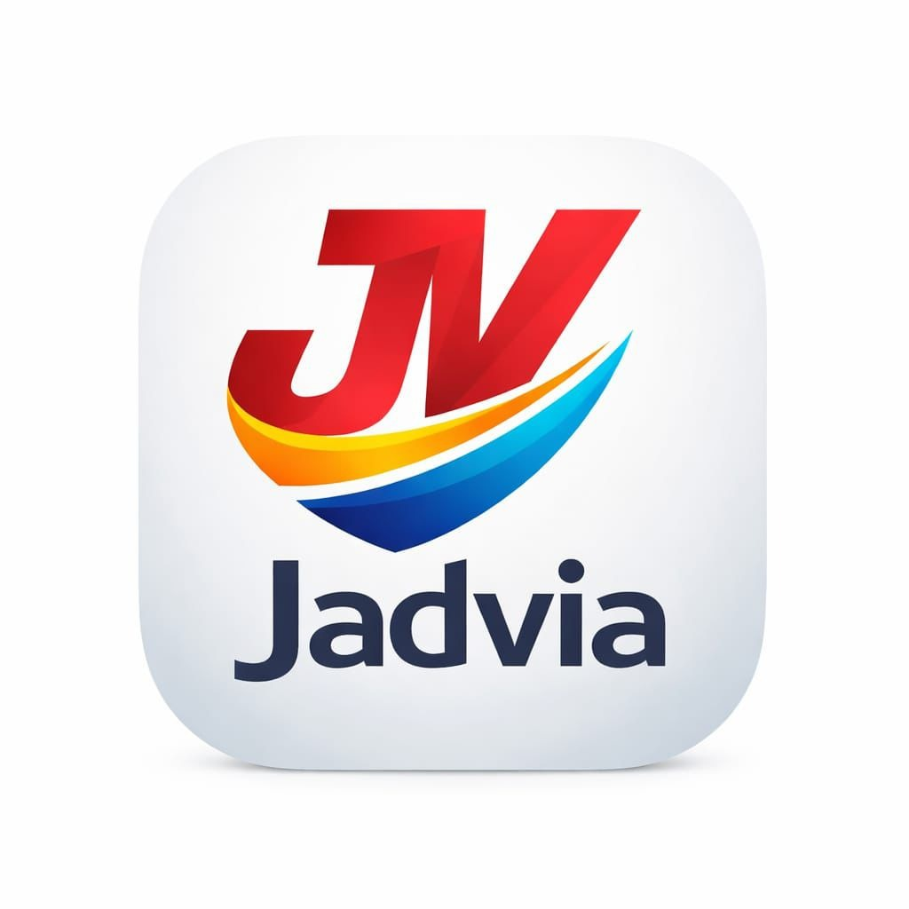

Rastreamento em tempo real
Acompanhe entregas e deslocamentos de forma clara e rápida.

Disponível para Android
Jadvia Tech
Gestão de transporte, entregas e rastreamento em um só aplicativo.
Ao clicar em Instalar, o download do APK será iniciado.
O Jadvia Transportadora é um aplicativo criado para facilitar a rotina de operações logísticas, entregas e acompanhamento de transporte. Com uma interface prática e organizada, o app ajuda no controle de rotas, no monitoramento de pedidos e na visualização rápida das informações mais importantes.
Ideal para uso demonstrativo em projetos acadêmicos e também como base para soluções reais, oferecendo uma experiência moderna inspirada em páginas profissionais de aplicativos.
Acompanhe entregas e deslocamentos de forma clara e rápida.
Organize trajetos e melhore a eficiência do transporte.
Visualize pedidos, status e etapas operacionais em um só lugar.
Receba alertas importantes sobre atualização de entregas e movimentações.
Esse app me surpreendeu. A interface ficou muito organizada e o acompanhamento das entregas está bem claro. Para um projeto demonstrativo, a apresentação ficou muito profissional e fácil de entender.
Aplicativo bonito e intuitivo. Gostei bastante da parte de rotas e da organização das informações. Seria interessante ver mais telas futuramente, mas a base do projeto está muito boa.
Muito bom para visualizar o conceito do app. A proposta de transporte ficou clara, a navegação é simples e o visual lembra páginas profissionais de aplicativos.
Gostei bastante do resultado. O design está limpo, profissional e passa bem a proposta da Jadvia Transportadora. Ficou uma ótima apresentação para projeto integrador.